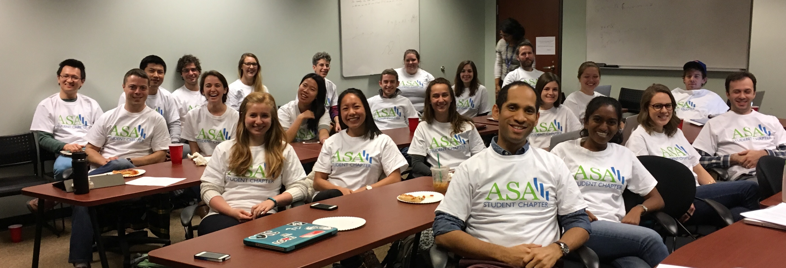

Vanderbilt Biostatistics Graduate Student Association
An ASA Student Chapter
The Biostatistics Graduate Student Association was founded in 2016 by a group of enthusiastic students who were particularly excited about getting food at journal club, nerdy t-shirts, and sharing knowledge. It is a recognized organization of Vanderbilt University as well as an ASA student chapter. Currently, it functions primarily to host bi-monthly student-run Journal Clubs.
Mission: We seek to facilitate an environment for students to engage in discussions regarding biostatistics and data science concepts in order to further their knowledge and understanding of the current state of the field.


Journal Club dates
📆 08/22/2018 - 🎉 Welcome Back Social 🎉
📆 09/05/2018
📆 09/19/2018
📆 10/03/2018
📆 10/17/2018
📆 10/31/2018
📆 11/14/2018 - ⚡ Lightning Talks ⚡
📆 11/28/2018
📆 12/12/2018
Journal Club expectations
- All are welcome to attend, however the content is set specifically for 3rd year+.
- All attendees are expected to have read the article. Here is a good intro on How to Read the Statistical Methods Literature.
- The leader for the week will lead a general discussion, occasionally accompanied by a short presentation of the material.
- Students in 3rd year+ are required to present once per year (after completing your orals).
- You can sign up for a slot here. If you haven’t signed up by September 1st, you will be randomly assigned.
- Please send your Journal article to the Secretary no less than 2 weeks in advance to allow for time to disseminate to all students.
- Presenters are required to invite at least one faculty member to attend their meeting and participate in the discussion.
Select past meetings
- Mark led a discussion on the article “Fair Treatment Comparisons in Observational Research”.
- Nate led a discussion about “On the Variances of Asymptotically Normal Estimators from Complex Surveys”.
- Sandya led a discussion on “A Statistical Framework for the Adaptive Management of Epidemiological Interventions”.
- Sarah led a discussion on the paper “Bias and efficiency of multiple imputation compared with complete-case analysis for missing covariate values”.
- Allison led a discussion on the article “When Efficient Model Averaging Out-Performs Boosting and Bagging”.